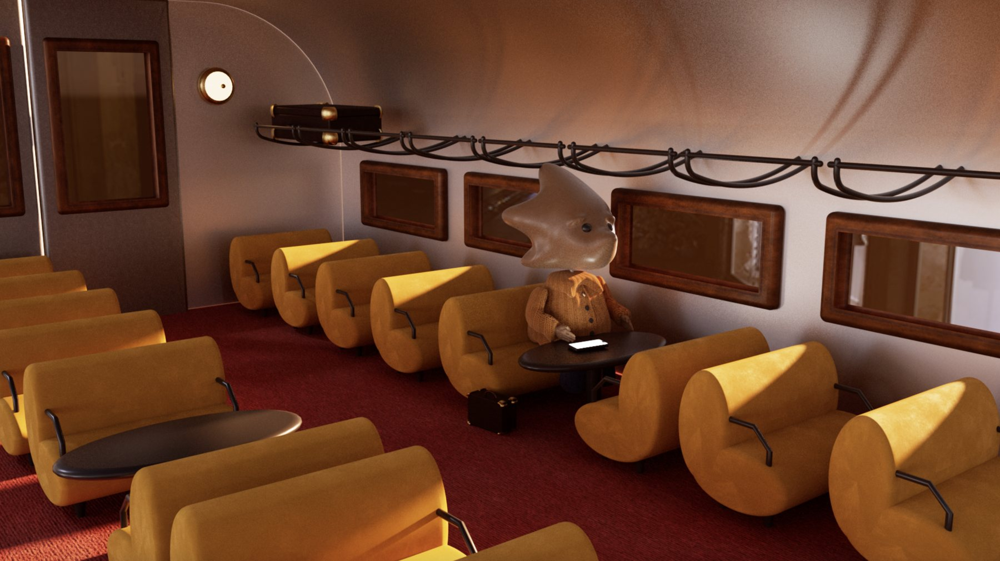
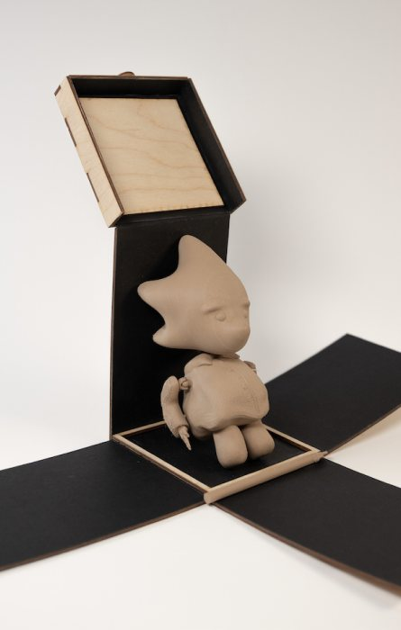
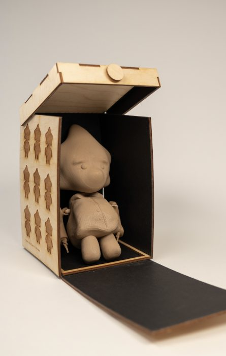
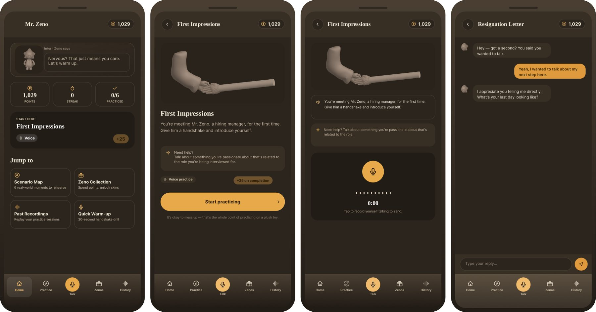
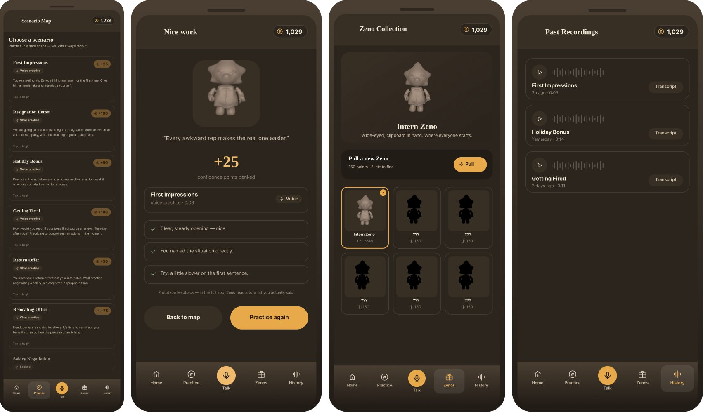

Mr. Zeno
A toy and an app that give students somewhere to rehearse the professional conversations they’ve never had, before the first one counts.

- Role
- Research, 3D character, UI, packaging
- Duration
- About 1 week
- Team
- Solo, self-initiated
- Tools
- Figma, Cinema 4D, Spline, Illustrator
01 The problem
Knowing what to say isn’t the same as having said it.
High school and college students start meeting adults in professional roles long before anyone teaches them how: a first interview, a first supervisor, a first message to a coworker. First-generation and introverted students often know exactly what they want to communicate. What they lack is practice, and the first rehearsal usually happens in the real conversation, with real stakes.
That gap is the user pain point. It isn’t missing information; there is no shortage of articles about interview etiquette. It is missing repetition in a place where a mistake costs nothing.

02 Why not just talk to a person?
A coach is the goal. Zeno is the rehearsal before it.
A reviewer asked the right question: why would a mascot be better than a real person? It isn’t. A mentor, a career coach, or a campus career center will always teach professional communication better than an app can. The problem is who gets to the mentor. The students who most need one are often the least likely to have one, and walking into a mock interview is itself the kind of conversation they are nervous about.
So Zeno is not a replacement for people; it is a warm-up for them. It lowers the cost of the first attempt so the student arrives at the career center, the interview, or the internship having already said the words out loud once.
- Career coach or mentorBest feedback, but depends on access and courage to ask
- Campus mock interviewsRealistic, but high stakes for a nervous first-timer
- AI interview-practice toolsFocused on answering interview questions
- Mr. ZenoEveryday workplace moments, practiced through play, before any of the above
A formal competitor benchmark and testing with first-generation students are the next step for this prototype; see the takeaway below.
03 Why play
Play is how people practice being somewhere they haven’t been yet.
Instead of asking how to teach students professional etiquette, I asked how play could give someone a safe space to rehearse a situation they haven’t experienced. Children use dolls to act out the doctor’s office before they visit one; Zeno borrows that idea for the first day at an internship.
The physical toy matters. Opening the box, holding the figure, and setting it on the desk turns a practice session into a small ritual instead of another notification.
- Physical play
- Scenario
- Practice
- Communication
- Confidence
- Real-world use


04 Design response
Short scenarios, spoken or typed, with Zeno on your side.
The app is built around a scenario map: moments like First Impressions or writing a resignation letter. Each scenario can be practiced out loud with a voice recording or typed as a chat. Zeno opens every session by naming the nerves (“Nervous? That just means you care.”), then gives feedback and points after each attempt.
Points, streaks, and a collection of Zeno outfits keep the rhythm of a game, but the visual hierarchy always puts the next practice first. Past recordings let students hear themselves improve.


05 Results
A working medium-fidelity prototype, a printed figure, and its box.
In about a week I built the character in 3D, printed and packaged it, and designed eight app screens that let me watch how people move through a guided conversation. The prototype answers whether the flow makes sense. It doesn’t yet answer whether students feel more confident afterward, and that is the question worth testing next.
06 Takeaway
Where it succeeds: the student who has never had a boss.
The first-generation student starting an internship is not missing ability; they are missing the rehearsals that other students got at dinner tables and family offices. If Zeno works, its impact is small and specific: one less first attempt made under pressure. Career centers could hand out the toy at orientation, and students could practice the week before their first mock interview rather than instead of it. What I would change is the order I worked in. Next time, the benchmark and the conversations with students come first, and the mascot comes second.
Who it’s for
First-generation and introverted students heading into interviews, internships, and first jobs.
How to validate
Benchmark against career-center mock interviews and practice apps, then test with 5–8 students, measuring confidence before and after.
What I learned
A character can lower the stakes, but only research can prove the stakes were lowered.